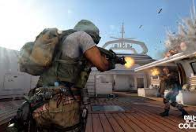
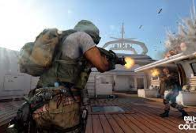

Descrição do jogo:
Black Ops Cold War, a sequência direta de Call of Duty: Black Ops, mergulha os fãs nas profundezas da volátil batalha geopolítica da Guerra Fria no início dos anos 80. Nada é o que parece em uma emocionante Campanha para um jogador, em que os jogadores ficarão frente a frente com figuras históricas e verdades inconvenientes em batalhas ao redor do mundo, passando por locais emblemáticos como Berlim Oriental, Vietnã, Turquia, a sede da KGB soviética e muito mais.